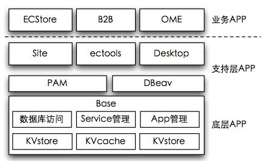

ECOS完全由APP组成的系统,每个APP采用统一的约定组装在一起, 如果说ecos像linux一样由许多包组成,那么base app就是ecos的内核(kernel)。

app机制的特性
所有的开发资源都从属于某一个app, 每个app拥有自己的表, controller, model, view, library, service等资源. 我们推崇最小化部署原则, 将大的任务拆解为可独立部署的app单元
OSGI是JAVA下的一个组件化设计,其代表产 品是编辑器Eclipse,该工具生命力非常强大,可以 通过组件来扩充使其适合软件开发工艺中的各个流 程。ECOS尝试作为一个类似OSGI的简易实现,简 化其开发成本,而不失去其灵活性。随着商派基于 ECOS的产品线发展,新的应用可以灵活的扩展原有 应用的界面和流程,证明该尝试是非常成功的。
OSGI的部署单位是Bundle, 对应在ECOS中就 是APP。其共性是具有称为“服务”的扩展接口。通过 Service机制,App之间可以扩展功能,界面,和操作 流程。而不必担心原有应用升级带来的问题。
与linux Kernel不同的是:BASE提供了软件包管理机制。BASE让软件包的安装和卸载非常方便